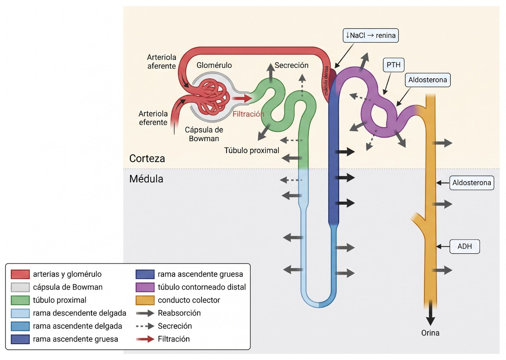
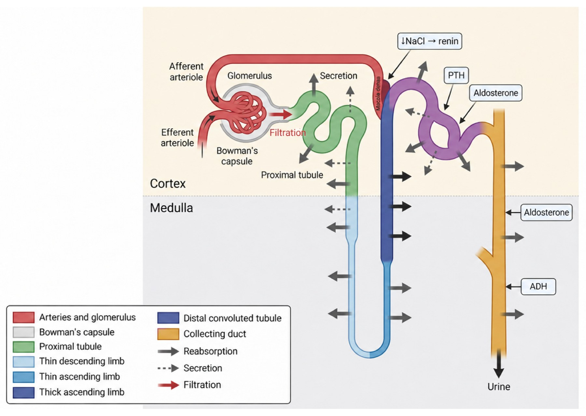

Modelo de entrada → proceso → salida. Cada estación de la nefrona muestra qué procesos ocurren ahí, con qué transportadores y bajo qué regulación hormonal. Es la base para ubicar después dónde falla el riñón en la patología.
Input
Sangre que ingresa al riñón
La sangre entra por la arteria renal a través del hilio y se ramifica hacia las arterias interlobulares, arciformes y aferentes que conectan al glomérulo.
Arteria renal (hilio)
Arterias interlobulares
Arterias arciformes
Arterias aferentes
Capilares glomerulares
Process
Cuatro procesos de la nefrona
1FiltraciónFiltrado glomerular.
2Reabsorción tubularSe reabsorben nutrientes orgánicos (aminoácidos, oligoelementos) y glucosa.
3Secreción tubularLas toxinas son secretadas y no reabsorbidas.
4Excreción urinariaLo que permanece en la luz tubular sale como orina.
F FiltraciónR ReabsorciónS SecreciónH Regulación hormonal
Relación anatomofuncional
Recorrido por la nefrona

Figura 1. Nefrona: correlación anatomofuncional. Creado en BioRender.com
Corpúsculo renal
Capilares glomerulares
F
Filtración de grandes cantidades de líquido y solutos hacia el espacio de Bowman: aquí empieza la formación de orina. El filtrado pasa al túbulo proximal.
Túbulo proximal
Túbulo proximal (TP)
RSH
Reabsorción y secreción casi total de los principales solutos y reabsorción del 70 % del agua filtrada, en condiciones de isotonicidad. El motor es el arrastre de sodio generado por la bomba Na⁺/K⁺ de la membrana basolateral.
Reabsorción
Cotransporte con Na⁺: glucosa, aminoácidos, fosfatos, sulfatos.
Transporte saturable con máximo tubular (Tm): bajo el umbral plasmático todo lo filtrado se reabsorbe; por encima, el exceso se excreta.
Final del TP: el Cl⁻ concentrado pasa con Na⁺ como NaCl por las uniones intercelulares.
K⁺ por conductancias específicas; siempre la misma proporción del filtrado.
Secreción
Ácidos y bases orgánicas, toxinas y fármacos.
La mayor parte del excedente de productos que circulan en el plasma.
H⁺ vía antitransporte Na⁺/H⁺ (NHE3), con recuperación del bicarbonato filtrado.
Algo de K⁺ en la parte final del TP.
NHE3: se inhibe con PTH y glucagón; se activa con angiotensina II, catecolaminas α y endotelina.
Mecanismo del agua: la bomba Na⁺/K⁺ acumula sales en el espacio basolateral, crea un gradiente osmolar con la luz tubular y el aumento de presión de agua en ese espacio la empuja hacia el capilar.
Asa de Henle
Asa de Henle
RH
Rama descendente delgada
Sale agua
Es impermeable a la urea pero mantiene alta permeabilidad al agua.
Rama ascendente delgada
Sale NaCl, entra urea
Impermeable al agua. El NaCl sale por gradiente químico; la urea entra por gradiente químico.
Rama ascendente gruesa
Segmento diluyente
Impermeable al agua. Alta actividad de la bomba Na⁺/K⁺ basolateral. Cotransportador luminal Na⁺/K⁺/2Cl⁻ que saca estos iones de la luz: el líquido tubular se vuelve aún más hipotónico.
ADH: en la rama gruesa, el cotransportador Na⁺/K⁺/2Cl⁻ es activado por la hormona antidiurética (ADH).
Túbulo contorneado distal
Túbulo contorneado distal (TCD)
RH
Membrana apical
Cotransportador Na⁺/Cl⁻.
Membrana basolateral
Intercambiador 3Na⁺/Ca²⁺: saca Ca²⁺ de la célula hacia la sangre, es decir, reabsorbe calcio.
Bombas Na⁺/K⁺, de calcio y de magnesio.
Mácula densa: en la mácula densa se libera renina cuando la cantidad de NaCl disminuye; cuando aumenta, se contrae la arteriola aferente.
Túbulo conector y colector
Túbulo conector y conducto colector
RSH
Ajuste fino: aquí los transportadores y canales están regulados hormonalmente.
Región apical
Canales de Na⁺ específicos, regulados por aldosterona.
Canales de K⁺ que favorecen su secreción: activados por aldosterona, inhibidos por el H⁺ luminal.
Cotransporte Cl⁻/K⁺ de poca actividad.
Región basolateral y tipos celulares
Bombas Na⁺/K⁺ reguladas por aldosterona.
Células intercalares tipo A: H⁺-ATPasa apical (secreta H⁺) e intercambiador Cl⁻/HCO₃⁻ basolateral.
Acuaporinas en células principales.
Aldosterona: canales de Na⁺, canales de K⁺ y bomba Na⁺/K⁺.
Output
Formación de orina
Conducto colector→Excreción urinaria
Funciones
Riñón y homeostasis
Riñón
Manejo y depuración del contenido hídricoEl túbulo renal mantiene los electrolitos y el agua.
Equilibrio ácido-baseA cargo del túbulo renal.
Función endocrinaHomeostasis hormonal en dos vías:
ProduceHormonas de acción endocrina y paracrina: vitamina D activa, eritropoyetina y renina.
DegradaOtras hormonas, como la insulina y la hormona paratiroidea.
SRAA
Sistema renina-angiotensina-aldosterona
Asas de retroalimentación renina-angiotensina-aldosterona y potasio-aldosterona. La producción y secreción de aldosterona en la zona glomerulosa se determina por la entrada de cada asa.
Asa renina-angiotensina-aldosterona
Células yuxtaglomerulares
Liberación de renina
Angiotensinógeno → Angiotensina I
ECA → Angiotensina II y III
Liberación de aldosterona
Retención renal de Na⁺
↑ Volumen de sangre circulante
↑ Presión de perfusión renal
Frena a las células yuxtaglomerulares (cierra el asa)
La aldosterona regula el volumen extracelular y la homeostasis del potasio uniéndose al receptor de mineralocorticoide (MR) de las células epiteliales principales del conducto colector renal cortical.
Aldosterona
Receptor de mineralocorticoide (MR)
Núcleo: genes blanco (GRE)
Respuesta transcripcional
Membrana luminal
Sgk1 fosforila a Nedd4-2 y lo inactiva
Menos ubiquitinación y degradación proteasomal de ENaC
Más ENaC en la membrana: entra Na⁺ desde la luz
Membrana basolateral
Activación de la Na⁺/K⁺-ATPasa
Exporta Na⁺ hacia la sangre y absorbe K⁺ hacia la célula
El K⁺ sale a la luz por el canal luminal
Resultado: reabsorción de Na⁺ y H₂O, secreción de K⁺.
11β-HSD2: convierte el cortisol en cortisona, que no activa al MR; así el receptor queda disponible para la aldosterona.
Evaluación
¿Cómo se valora la función renal?
Función renal
Glomerular
Filtrado glomerular (FGR): ultrafiltrado del plasma libre de proteínas producido por unidad de tiempo. Es el indicador más utilizado.
Albuminuria: albúmina en orina en un tiempo determinado. Marca alteración de la permeabilidad de la barrera hemato-urinaria (membrana basal glomerular).
Las guías KDIGO consideran ambos fundamentales para definir la ERC.
Tubular
Reabsorción y excreción de componentes urinarios.
Concentración y acidificación: estudios analíticos y pruebas funcionales tras estímulo (prueba de furosemida).
El daño tubular puede preceder a la caída del FGR, y una tubulopatía puede existir sin lesión glomerular.
El filtrado empieza donde el sistema circulatorio (endotelio capilar) contacta con el excretor (epitelio de la cápsula de Bowman), en el glomérulo.
FGR
Medición del filtrado glomerular
FGR
Medido: aclaramiento renal
Volumen de plasma que queda libre de una sustancia tras su paso por el riñón. Equivale al FGR si la sustancia:
tiene concentración estable en plasma
no se une a proteínas plasmáticas
se filtra libremente en el glomérulo
no se reabsorbe ni se secreta en el túbulo
ExógenaInulina, iotalamato.
EndógenaCreatinina, producida por el propio organismo.
Estimado: fórmulas
Calculado a partir de biomarcadores en sangre: urea, creatinina y cistatina C. Fácil de usar en la práctica clínica.
No inferir el FGR directamente del valor del biomarcador: siempre calcularlo con la fórmula.
Creatinina
Aclaramiento de creatinina
Creatina muscular
Creatinina (proporcional a la masa muscular)
Filtración glomerular + secreción en túbulo proximal
Orina
Cómo se mide
Recolección de orina en un tiempo fijo, por lo general 24 h.
Creatinina en suero y en orina, en las mismas unidades.
Resultado normalizado a 1,73 m² de superficie corporal.
Ccr = (U × V) / S
U: creatinina en orina · V: volumen urinario (ml/min) · S: creatinina sérica · resultado en ml/min/1,73 m²
Límites y uso
Barato y sencillo, pero no es un marcador ideal.
La secreción tubular de creatinina, que aumenta conforme cae el FGR, limita su exactitud.
La recolección de orina suele ser incorrecta.
Hoy las fórmulas de estimación rinden mejor y se prefieren.
Útil cuando la producción de creatinina es atípica: gran masa muscular, desnutrición o sarcopenia.
Renal physiology · structure–function correlation
Renal function: from the renal artery to urine
An input → process → output model. Each station of the nephron shows which processes happen there, through which transporters and under which hormonal regulation. It is the base for locating later where the kidney fails in disease.
Input
Blood entering the kidney
Blood enters through the renal artery at the hilum and branches into the interlobar, arcuate and afferent arteries that connect to the glomerulus.
Renal artery (hilum)
Interlobar arteries
Arcuate arteries
Afferent arteries
Glomerular capillaries
Process
Four processes of the nephron
1FiltrationGlomerular filtrate.
2Tubular reabsorptionOrganic nutrients (amino acids, trace elements) and glucose are reabsorbed.
3Tubular secretionToxins are secreted and not reabsorbed.
4Urinary excretionWhat remains in the tubular lumen leaves as urine.
F FiltrationR ReabsorptionS SecretionH Hormonal regulation
Structure–function correlation
Along the nephron

Figure 1. Nephron: structure–function correlation. Created in BioRender.com
Renal corpuscle
Glomerular capillaries
F
Filtration of large amounts of fluid and solutes into Bowman's space: urine formation begins here. The filtrate passes on to the proximal tubule.
Proximal tubule
Proximal tubule (PT)
RSH
Nearly complete reabsorption and secretion of the main solutes and reabsorption of 70% of filtered water, under isotonic conditions. The driving force is sodium movement generated by the Na⁺/K⁺ pump in the basolateral membrane.
Reabsorption
Cotransport with Na⁺: glucose, amino acids, phosphates, sulfates.
Saturable transport with a tubular maximum (Tm): below the plasma threshold everything filtered is reabsorbed; above it, the excess is excreted.
Late PT: concentrated Cl⁻ moves with Na⁺ as NaCl through the intercellular junctions.
K⁺ through specific conductances; always the same fraction of the filtered load.
Secretion
Organic acids and bases, toxins and drugs.
Most of the excess products circulating in plasma.
H⁺ via the Na⁺/H⁺ antiporter (NHE3), with recovery of filtered bicarbonate.
Some K⁺ in the late PT.
NHE3: inhibited by PTH and glucagon; activated by angiotensin II, α-catecholamines and endothelin.
Water mechanism: the Na⁺/K⁺ pump accumulates salts in the basolateral space, creating an osmotic gradient with the tubular lumen; the rise in water pressure in that space drives it into the capillary.
Loop of Henle
Loop of Henle
RH
Thin descending limb
Water leaves
It is impermeable to urea but keeps high water permeability.
Thin ascending limb
NaCl leaves, urea enters
Impermeable to water. NaCl leaves down its chemical gradient; urea enters down its chemical gradient.
Thick ascending limb
Diluting segment
Impermeable to water. High basolateral Na⁺/K⁺ pump activity. Luminal Na⁺/K⁺/2Cl⁻ cotransporter removes these ions from the lumen, so the tubular fluid becomes even more hypotonic.
ADH: in the thick limb, the Na⁺/K⁺/2Cl⁻ cotransporter is activated by antidiuretic hormone (ADH).
Distal convoluted tubule
Distal convoluted tubule (DCT)
RH
Apical membrane
Na⁺/Cl⁻ cotransporter.
Basolateral membrane
3Na⁺/Ca²⁺ exchanger: moves Ca²⁺ out of the cell into blood, that is, it reabsorbs calcium.
Na⁺/K⁺, calcium and magnesium pumps.
Macula densa: at the macula densa, renin is released when the amount of NaCl falls; when it rises, the afferent arteriole constricts.
Connecting tubule and collecting duct
Connecting tubule and collecting duct
RSH
Fine tuning: here transporters and channels are under hormonal regulation.
Apical region
Specific Na⁺ channels, regulated by aldosterone.
K⁺ channels that favor its secretion: activated by aldosterone, inhibited by luminal H⁺.
Low-activity Cl⁻/K⁺ cotransport.
Basolateral region and cell types
Na⁺/K⁺ pumps regulated by aldosterone.
Type A intercalated cells: apical H⁺-ATPase (secretes H⁺) and basolateral Cl⁻/HCO₃⁻ exchanger.
Aquaporins in principal cells.
Aldosterone: Na⁺ channels, K⁺ channels and the Na⁺/K⁺ pump.
Output
Urine formation
Collecting duct→Urinary excretion
Functions
Kidney and homeostasis
Kidney
Handling and clearance of body waterThe renal tubule maintains electrolytes and water.
Acid–base balanceCarried out by the renal tubule.
Endocrine functionHormonal homeostasis through two pathways:
ProducesHormones with endocrine and paracrine action: active vitamin D, erythropoietin and renin.
DegradesOther hormones, such as insulin and parathyroid hormone.
RAAS
Renin–angiotensin–aldosterone system
Renin–angiotensin–aldosterone and potassium–aldosterone feedback loops. Aldosterone production and secretion in the zona glomerulosa is set by the input of each loop.
Aldosterone regulates extracellular volume and potassium homeostasis by binding the mineralocorticoid receptor (MR) of the principal epithelial cells of the renal cortical collecting duct.
Aldosterone
Mineralocorticoid receptor (MR)
Nucleus: target genes (GRE)
Transcriptional response
Luminal membrane
Sgk1 phosphorylates and inactivates Nedd4-2
Less ubiquitination and proteasomal degradation of ENaC
More ENaC in the membrane: Na⁺ enters from the lumen
Basolateral membrane
Activation of Na⁺/K⁺-ATPase
Exports Na⁺ to blood and takes K⁺ into the cell
K⁺ leaves to the lumen through the luminal channel
Result: Na⁺ and H₂O reabsorption, K⁺ secretion.
11β-HSD2: converts cortisol to cortisone, which does not activate the MR, so the receptor stays available to aldosterone.
Assessment
How is kidney function assessed?
Kidney function
Glomerular
Glomerular filtration rate (GFR): protein-free plasma ultrafiltrate produced per unit of time. It is the most widely used indicator.
Albuminuria: albumin in urine over a set period. It marks altered permeability of the blood–urine barrier (glomerular basement membrane).
KDIGO guidelines consider both essential to define CKD.
Tubular
Reabsorption and excretion of urinary components.
Concentration and acidification: laboratory studies and functional tests after a stimulus (furosemide test).
Tubular damage can precede the fall in GFR, and a tubulopathy can exist without glomerular injury.
Filtration begins where the circulatory system (capillary endothelium) meets the excretory system (Bowman's capsule epithelium), in the glomerulus.
GFR
Measuring glomerular filtration
GFR
Measured: renal clearance
The volume of plasma cleared of a substance as it passes through the kidney. It equals GFR when the substance:
has a stable plasma concentration
does not bind plasma proteins
is freely filtered at the glomerulus
is neither reabsorbed nor secreted by the tubule
ExogenousInulin, iothalamate.
EndogenousCreatinine, produced by the body itself.
Estimated: equations
Calculated from blood biomarkers: urea, creatinine and cystatin C. Easy to use in routine clinical practice.
Do not infer GFR directly from the biomarker value: always calculate it with the equation.